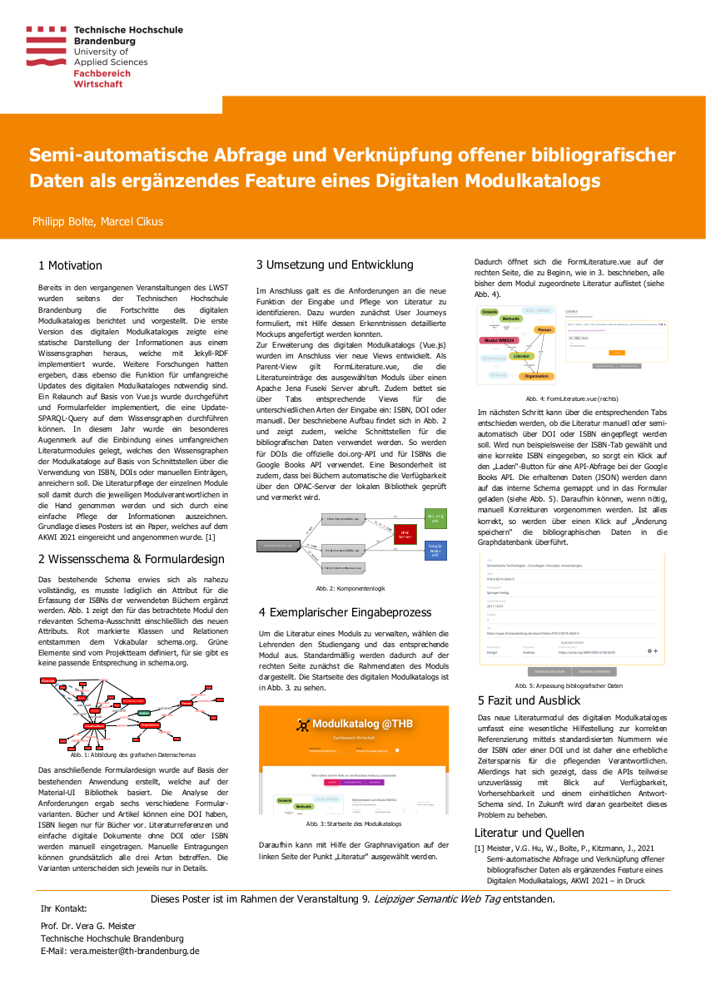

Philipp Bolte
Implementierung einer Literatursuche zur halb-automatisierten Pflege des bestehenden Wissensgraphen des Digitalen Modulkatalogs an der Technischen Hochschule Brandenburg. Die Implementierung erfolgte druch Studierende im Rahmen des Moduls EKG21 auf Basis des bestehenden Forschungsprojektes zum Digitalen Modulkatalog.
